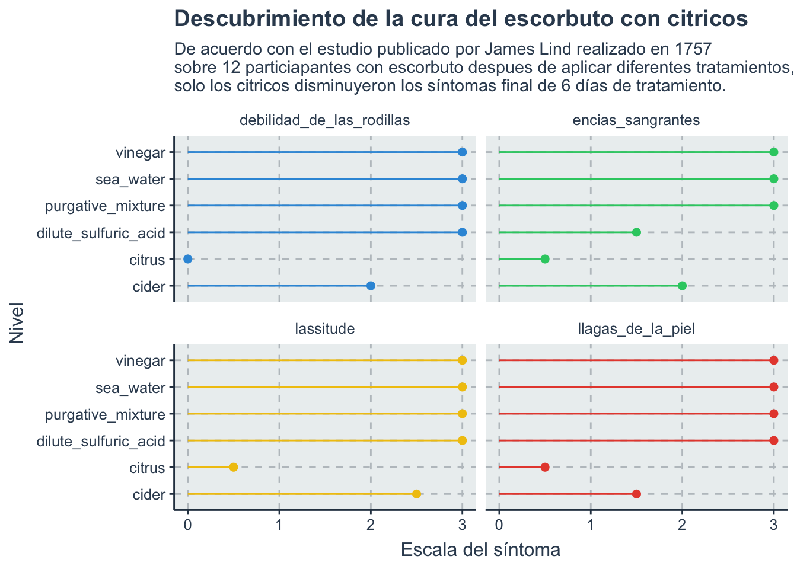

Code
tt <- tt_load("2023-07-25")--- Compiling #TidyTuesday Information for 2023-07-25 ------- There is 1 file available ------ Starting Download ---
Downloading file 1 of 1: `scurvy.csv`--- Download complete ---Join the R4DS Online Learning Community in the weekly #TidyTuesday event! Every week we post a raw dataset, a chart or article related to that dataset, and ask you to explore the data. While the dataset will be “tamed”, it will not always be tidy! As such you might need to apply various R for Data Science techniques to wrangle the data into a true tidy format. The goal of TidyTuesday is to apply your R skills, get feedback, explore other’s work, and connect with the greater #RStats community! As such we encourage everyone of all skills to participate!
Download the weekly data and make available in the tt object.
tt <- tt_load("2023-07-25")--- Compiling #TidyTuesday Information for 2023-07-25 ------- There is 1 file available ------ Starting Download ---
Downloading file 1 of 1: `scurvy.csv`--- Download complete ---Take a look at the readme for the weekly data to get insight on the dataset. This includes a data dictionary, source, and a link to an article on the data.
ttTake an initial look at the format of the data available.
data <- tt$scurvy
data %>%
glimpse() %>%
formattable()Rows: 12
Columns: 8
$ study_id <dbl> 1, 2, 3, 4, 5, 6, 7, 8, 9, 10, 11, 12
$ treatment <chr> "cider", "cider", "dilute_sulfuric_acid", "d…
$ dosing_regimen_for_scurvy <chr> "1 quart per day", "1 quart per day", "25 dr…
$ gum_rot_d6 <chr> "2_moderate", "2_moderate", "1_mild", "2_mod…
$ skin_sores_d6 <chr> "2_moderate", "1_mild", "3_severe", "3_sever…
$ weakness_of_the_knees_d6 <chr> "2_moderate", "2_moderate", "3_severe", "3_s…
$ lassitude_d6 <chr> "2_moderate", "3_severe", "3_severe", "3_sev…
$ fit_for_duty_d6 <chr> "0_no", "0_no", "0_no", "0_no", "0_no", "0_n…| study_id | treatment | dosing_regimen_for_scurvy | gum_rot_d6 | skin_sores_d6 | weakness_of_the_knees_d6 | lassitude_d6 | fit_for_duty_d6 |
|---|---|---|---|---|---|---|---|
| 1 | cider | 1 quart per day | 2_moderate | 2_moderate | 2_moderate | 2_moderate | 0_no |
| 2 | cider | 1 quart per day | 2_moderate | 1_mild | 2_moderate | 3_severe | 0_no |
| 3 | dilute_sulfuric_acid | 25 drops of elixir of vitriol, three times a day | 1_mild | 3_severe | 3_severe | 3_severe | 0_no |
| 4 | dilute_sulfuric_acid | 25 drops of elixir of vitriol, three times a day | 2_moderate | 3_severe | 3_severe | 3_severe | 0_no |
| 5 | vinegar | two spoonfuls, three times daily | 3_severe | 3_severe | 3_severe | 3_severe | 0_no |
| 6 | vinegar | two spoonfuls, three times daily | 3_severe | 3_severe | 3_severe | 3_severe | 0_no |
| 7 | sea_water | half pint daily | 3_severe | 3_severe | 3_severe | 3_severe | 0_no |
| 8 | sea_water | half pint daily | 3_severe | 3_severe | 3_severe | 3_severe | 0_no |
| 9 | citrus | two lemons and an orange daily | 1_mild | 1_mild | 0_none | 1_mild | 0_no |
| 10 | citrus | two lemons and an orange daily | 0_none | 0_none | 0_none | 0_none | 1_yes |
| 11 | purgative_mixture | a nutmeg-sized paste of garlic, mustard seed, horseradish, balsam of Peru, and gum myrrh three times a day | 3_severe | 3_severe | 3_severe | 3_severe | 0_no |
| 12 | purgative_mixture | a nutmeg-sized paste of garlic, mustard seed, horseradish, balsam of Peru, and gum myrrh three times a day | 3_severe | 3_severe | 3_severe | 3_severe | 0_no |
Explore the data and process it into a nice format for plotting! Access each dataset by name by using a dollarsign after the tt object and then the name of the data set.
clean_data <- data %>%
pivot_longer(
cols = ends_with("_d6"),
names_to = "symptom_d6",
values_to = "level"
) %>%
mutate(level = as.numeric(str_remove(level, "_.*")),
symptom_d6 = str_remove(symptom_d6, "_d6")) Using your processed dataset, create your unique visualization.
p <- clean_data %>%
group_by(treatment, symptom_d6) %>%
summarise(avg_level = mean(level)) %>%
ggplot(aes(treatment, avg_level, fill = symptom_d6)) +
geom_col() +
coord_flip() +
facet_wrap(~symptom_d6)`summarise()` has grouped output by 'treatment'. You can override using the
`.groups` argument.ggplotly(p)p <- clean_data %>%
filter(symptom_d6 != "fit_for_duty") %>%
mutate(symptom_d6 = case_match(symptom_d6,
"gum_rot" ~ "encias_sangrantes",
"lassitude" ~ "lassitude",
"skin_sores" ~ "llagas_de_la_piel",
"weakness_of_the_knees" ~ "debilidad_de_las_rodillas"
)) %>%
group_by(treatment, symptom_d6) %>%
summarise(avg_level = mean(level)) %>%
ggplot(aes(treatment, avg_level, color = symptom_d6)) +
geom_point(size = 2) +
geom_segment(aes(x = treatment, xend = treatment, y = 0, yend = avg_level)) +
coord_flip() +
facet_wrap(~symptom_d6) +
labs(title = "Descubrimiento de la cura del escorbuto con citricos",
subtitle = "De acuerdo con el estudio publicado por James Lind realizado en 1757 \nsobre 12 particiapantes con escorbuto despues de aplicar diferentes tratamientos, \nsolo los citricos disminuyeron los síntomas final de 6 días de tratamiento.") +
xlab("Nivel") +
ylab("Escala del síntoma") +
theme(legend.position = "none") `summarise()` has grouped output by 'treatment'. You can override using the
`.groups` argument.p
Save your image for sharing. Be sure to use the #TidyTuesday hashtag in your post on twitter!
# This will save your most recent plot
# ggsave(
# filename = "scurvy.png",
# plot = p,
# device = "png")